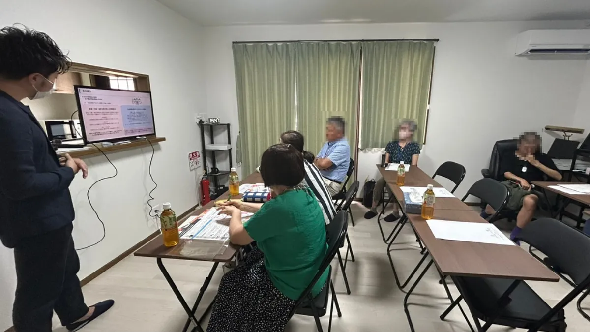
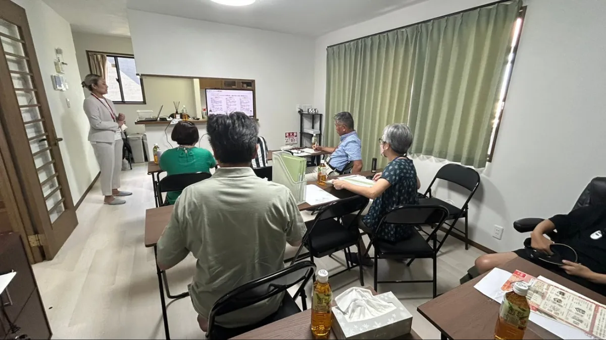
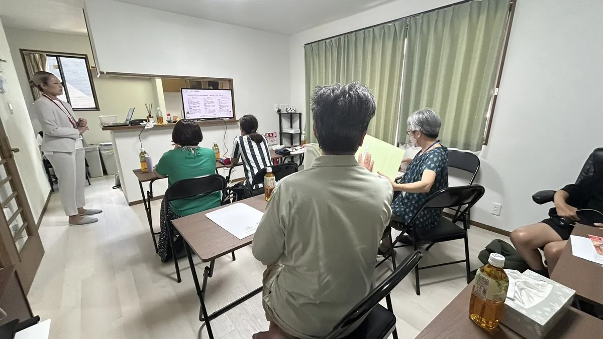
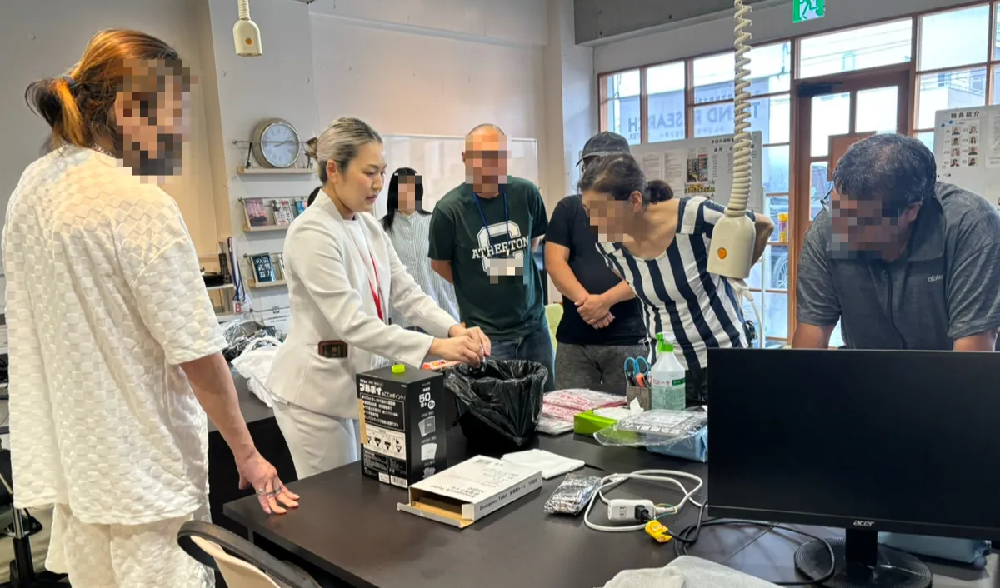

地域連携推進会議を開催しました（2025年7月）
2025年7月28日掲載・8月4日更新
開催の概要。
令和7年7月25日、地域との連携を深めるための「地域連携推進会議」を実施いたしました。今回は、TRC（就労支援施設）とGH（グループホーム）の利用者・職員が一体となり、避難訓練や施設見学、意見交換を行いました。
当日の流れ
- TRCにて会議スタート。参加者・職員の顔合わせを行い、会議の目的と流れを共有しました。
- 避難訓練（TRC利用者参加）。災害時を想定した避難訓練を実施。利用者の皆さんが積極的に参加され、実践的な取り組みとなりました。
- GHへ移動（14:25到着）。14:30から、施設内の案内や1日の生活の流れ、利用開始までの手続きなどをご紹介しました。
- 地域連携推進会議 本編。
会議の内容。
1. 事業所の紹介と開会あいさつ
障がい福祉サービスの基本的な概要と、TRC・GHの役割を共有しました。
2. 利用者支援に関する取り組み
- 地域の人への施設等や利用者に関する理解の促進：グループホームの1日の生活サイクル、利用開始までの流れと必要な手続き
- 施設等やサービスの透明性・質の確保：利用料と報酬単価の考え方、利用者数や職員配置の現状、事業継続計画（BCP）の説明
3. 権利擁護と安全対策
- 利用者の権利擁護：ヒヤリハット事例の紹介、社内研修の様子（YouTube教材の活用）
4. 地域との関係づくり
- 利用者と地域との関係づくり：町内会への参加、地域イベント（秋祭り等）への積極的な参加について
当日の様子。




質疑応答・意見交換。
住民・関係者の皆さまから多くのご質問やご意見をいただきました。以下、一部をご紹介いたします。
- Q. 障がい福祉サービスとは？
- 自立を目指すためのサポートを行う支援制度です。
- Q. GHには65歳以上は入居できないの？
- 65歳までに福祉サービスの利用歴があれば可能です。
- Q. スタッフは常駐していますか？
- 常駐体制を基本としています。
- Q. 地域連携の目的は？
- 誤解や不安をなくし、困っている方を地域全体で受け入れる体制づくりを目指しています。
- Q. 講演や勉強会の開催は可能？
- ご要望があれば、ぜひ実施させていただきたいと考えております。
その他の話題
- サービスの等級制度（福岡市では5級）
- 地域でのAED設置状況についての情報共有
- 受給者証の種類や役割（福祉・医療）
- 障がいの認知が進まない家庭へのアプローチの課題
参加者の声と今後の展望
- 小田部町内会長：「健常者と障がい者の間に壁をつくらず、共に生きる地域に」
- 野方町内会長：「まだGHの存在が知られていないので、地域全体で理解を広げたい」
- 社会福祉協議会の方：「今後も秋祭りなどを通じて連携を深めていきたい」
まとめ。
今回の地域連携推進会議を通じて、福祉サービスへの理解が一層深まり、地域と事業所の距離も近づいたと実感しています。今後も、地域の皆さまと共に「支え合い・つながる」取り組みを継続してまいります。ご参加いただいた皆様、本当にありがとうございました。
まずは、話してみませんか。
ご本人はもちろん、ご家族・相談支援専門員の方もご相談ください。